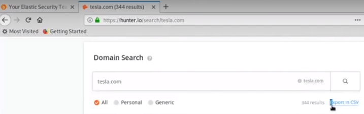

user websites like this to search for their domain, and get their email
this is a repo that have 1.4 billion clear text passwords:
https://github.com/philipperemy/tensorflow-1.4-billion-password-analysis


information about sites:
u can search on google like this: site: tesla.com
for sub directory, search like this:
site: tesla.com -www
or:
site: tesla.com filetype:pdf
can probably have some wrong files that u weren't supposed to see on there
Harvester:


have to learn something about theHarvester command
cause mine isn't working
theHarvester have to have a foreign VPN access to google to be able to use properly.


this is teacher's results
another tool for


this means that the email todd@tesla.com is pwned, and has some information out, if somebody have his hash and crack his hash or updates like those clear text passwords list
then this becomes dangerous.
new tools:

not important, but this is how u solve some of the application using problems about bluto
and you can find some bluto information about bluto

what bluto does for us:
it looks for the name servers, essentially doing our DNS recon
and it finds mail servers